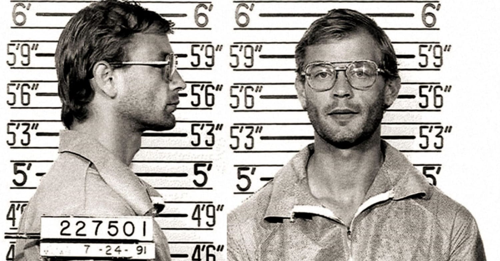
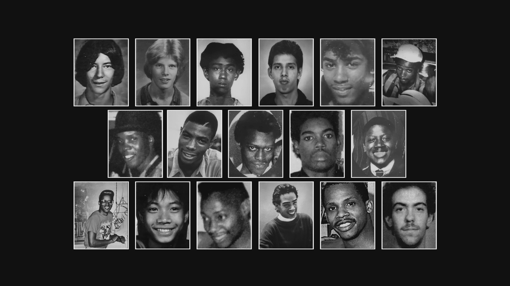

Crimes
Dahmer cometeu assassinatos, necrofilia e canibalismo entre 1978 e 1991.
Este documentário explora a vida e os crimes de Jeffrey Dahmer, um dos assassinos em série mais conhecidos dos Estados Unidos. A série detalha seu modus operandi, investigações policiais e o impacto de seus crimes nas vítimas e suas famílias.
Dahmer cometeu assassinatos, necrofilia e canibalismo entre 1978 e 1991.
Foi preso em 1991 após uma tentativa de fuga de uma vítima que alertou a polícia.
Condenado a 15 prisões perpétuas, morreu em 1994 na prisão.

